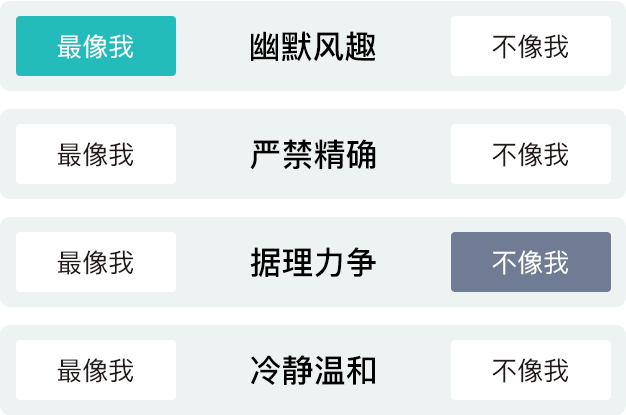

全面分析职场中的你，加速职业发展！
共28题 约需7分钟 报告约3600字职场个性是基于心理学家勒温的"场"理论（人的行为取决于人格与环境的综合作用0)运用自模参照技术剖面分析技术开发而成。测评结果能够有效分析及预测个体在实际工作环境中的表现。
职场个性测评系统，将从四大职业胜任素质进行分析分别为：
目标导向：分析你在目标达成面的特点
影响感召：分析你在社交与表达方面的特点
耐心合作：分析你在行动步调方面的特点
精确服从：分析你在细节，遵守规则方面的特点
精确服从：分析你在精确度和规则服从方面的特点
每个题目有四个描述
设想一下您在工作中的表现，然后进行选择您需要在以下每一组词中选择一个最像您（最适合描述您）和一个相对最不像您（最不适合描述您）的词
可能四个描述都符合你，或都不符合，但也进行进行选择。

本测试从目标导向，影响感召，耐心合作以及精确服从作为分析基础，设计职场114种个性特征12种职场形式风格。
报告包含内容如下：